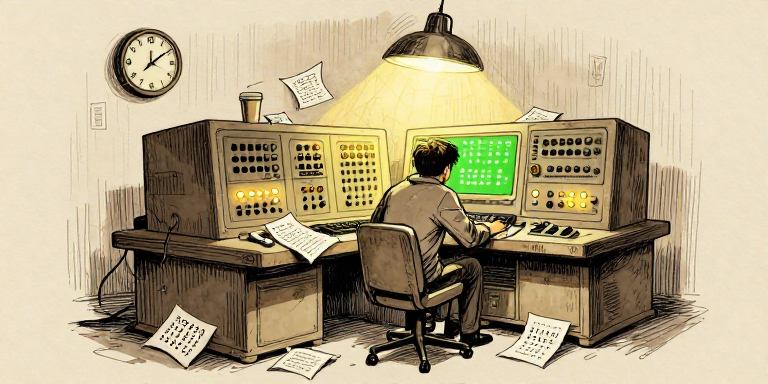
By the early 1950s, the machines from Issue 2 existed. ENIAC, EDVAC, the Manchester Mark 1 — rooms full of humming metal and blinking lights, capable of thousands of calculations per second.
There was just one problem: talking to them was a nightmare.
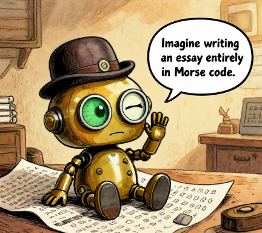
Imagine writing an essay entirely in Morse code.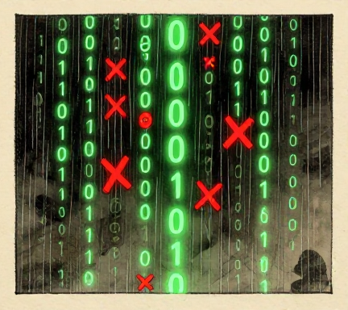
These machines spoke only one language — machine code. Raw sequences of binary digits. Every instruction, every number, every memory address was a string of 0s and 1s. To tell the machine "add these two numbers," you didn't write "add." You wrote something like 00010110 01010000 01100001.
The communication gap between human thought and machine code
Programming was translation work. Humans think in words and concepts. Machines think in electrical signals — on or off, 1 or 0. Somebody had to bridge that gap.
This is the story of the people who built that bridge. And the first thing they discovered was just how deep the chasm was.
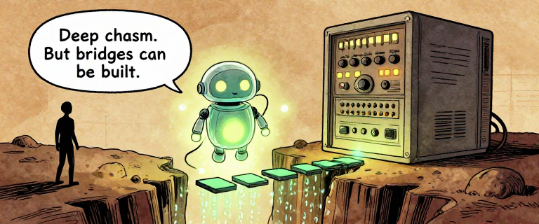
Deep chasm. But bridges can be built.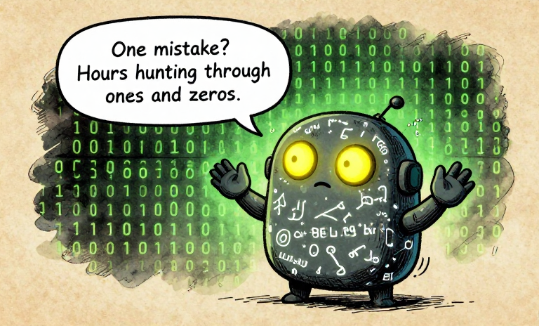
One mistake? Hours hunting through ones and zeros.Machine code is the native language of a computer — the only thing it truly understands. Every instruction is a binary number. Every piece of data is a binary number. Every memory location is a binary number.
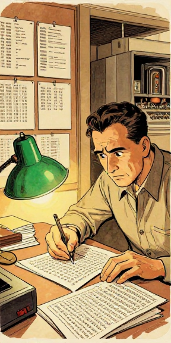
You wanted to add two numbers? First, memorize which binary pattern means "add." Then figure out the binary address of where each number is stored. Then figure out where to put the result. Then encode all of that as a long stream of 0s and 1s.
The binary encodes everything: the operation, the source, and the destination. The programmer managed all of this by hand.
Machine code: the programmer had to manage every bit by hand
It was slow. It was agonizing. Error rates were staggering — early studies suggested programmers spent up to 90% of their time finding and fixing errors, not writing new logic. The machine was fast, but the humans were the bottleneck.
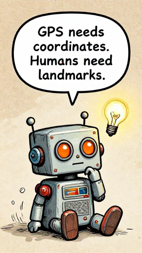
GPS needs coordinates. Humans need landmarks.Machine code is the language computers actually speak — raw binary instructions. It is precise, unforgiving, and almost impossible for humans to read. The entire history of programming languages is the story of making machines meet us halfway.
0010 could just be... ADD? ▶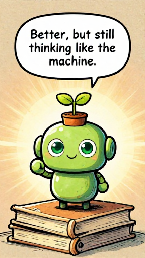
Better, but still thinking like the machine.By the late 1940s, programmers began creating shorthand. Instead of writing binary for each instruction, they assigned short mnemonics — tiny abbreviations a human could remember. ADD instead of 0010. LOAD instead of 0001.
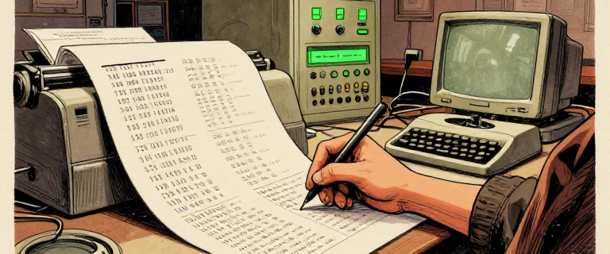
This was assembly language. A simple program called an assembler translated these mnemonics back into binary. One line of assembly became one machine instruction. The translation was mechanical and direct.
The same task at three levels of abstraction
Betty Holberton, one of the original six ENIAC programmers, went on to design the instruction set for UNIVAC and wrote its foundational SORT/MERGE routines — making her one of the few people who programmed at the absolute lowest level, defining what the binary codes would mean. Her sort routine was so efficient it was used for decades.
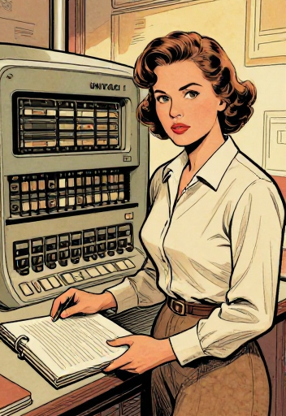
Assembly language was the first abstraction over machine code — replacing binary codes with human-readable mnemonics. It didn't change what you could do, but it changed how painful it was to do it. And it introduced a crucial idea: a program that translates human-friendly notation into machine-friendly binary.
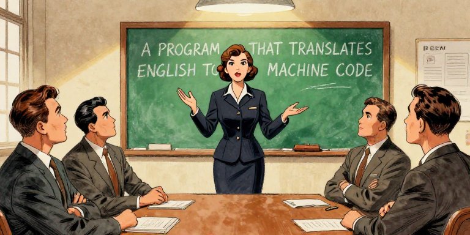
Grace Brewster Murray Hopper earned her PhD in mathematics from Yale in 1934. In 1943, she joined the Navy and was assigned to program the Harvard Mark I. Her superpower was seeing what was obvious to nobody else: computers would never reach their potential if only mathematicians could program them.
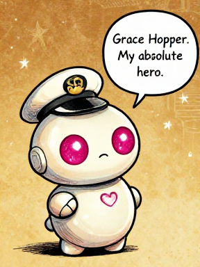
Grace Hopper. My absolute hero.Grace Hopper character card
In 1952, Hopper wrote what is widely regarded as the first compiler — a program called A-0 that translated mathematical notation into machine code. "I had a running compiler," she recalled, "and nobody would touch it. They told me a computer could only do arithmetic."
She kept building. A-0 led to A-2, then to FLOW-MATIC (delivered 1958-59), which understood English-like commands: MULTIPLY PRICE BY QUANTITY GIVING TOTAL.
Before and after compilers: manual vs. automatic translation
The term "bug" for technical faults dates back to Thomas Edison in the 1870s. In 1947, operators working with the Harvard Mark II found an actual moth trapped in a relay. They taped it into the logbook: "First actual case of bug being found." The word "actual" shows they already used "bug" as slang. Hopper loved this story and shared it widely, cementing "debugging" into computing's vocabulary.
A compiler is a program that translates human-readable code into machine code. Hopper's insight was profound: if a computer can manipulate symbols, it can manipulate words just as easily as numbers. The compiler is the bridge between human thought and machine execution — and it's still how most software is built today.
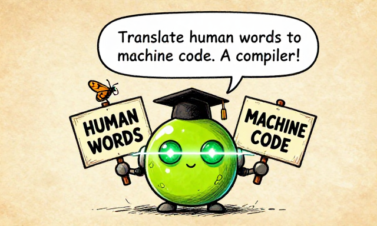
Translate human words to machine code. A compiler!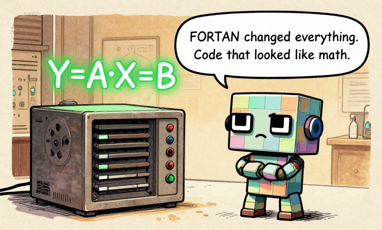
FORTRAN changed everything. Code that looked like math.John Warner Backus was a 29-year-old programmer at IBM who hated programming. Not the problem-solving — he hated the tedium. In 1953, he proposed a radical project: build a language where scientists could write formulas that looked like actual mathematics. He called it FORTRAN — short for FORmula TRANslation.
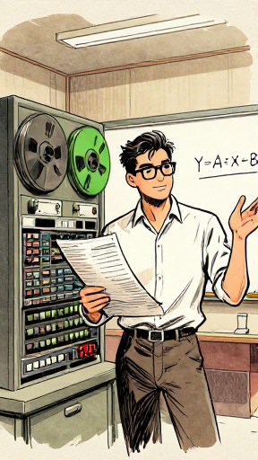
John Backus character card
One FORTRAN line replaces many assembly instructions
The skeptics were fierce. Assembly programmers argued no compiler could produce code as efficient as a skilled human. Backus and his team spent enormous effort on an optimizing compiler — one that translated cleverly. According to IBM's benchmarks, FORTRAN programs ran roughly as fast as hand-written assembly. Within two years, over half of all new IBM 704 code was written in FORTRAN.
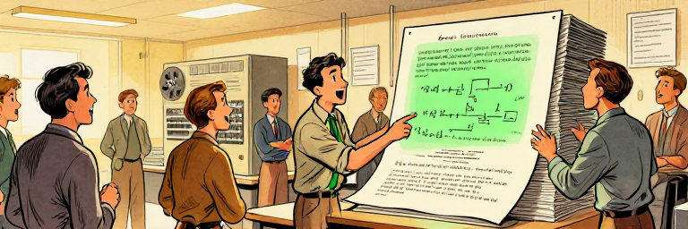
FORTRAN proved that you don't sacrifice power when you raise the level of abstraction. One line could generate dozens of machine instructions — almost as fast as hand-written code. This shattered the myth that high-level languages were toys. FORTRAN is still in use today, over 65 years later, in scientific computing and weather modeling.
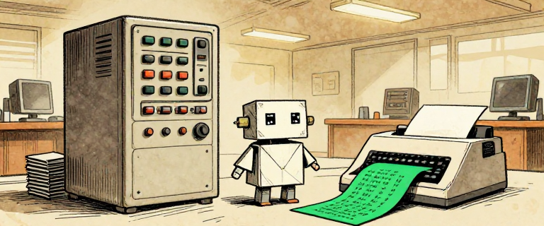
Look! Code that reads like English!By the late 1950s, FORTRAN had conquered scientific computing. Grace Hopper was pushing a different frontier. Her FLOW-MATIC language (delivered 1958-59) could process English-like commands — and it caught the attention of the U.S. Department of Defense.
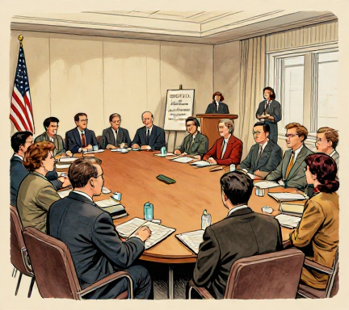
In May 1959, computer manufacturers, government agencies, and academics gathered at the Pentagon. Mary Hawes of Burroughs organized the initial meeting. Their goal: a single language for business data processing that would work on any machine.
The result was COBOL — the COmmon Business-Oriented Language, released in 1960.
COBOL code reads almost like a business memo
Hopper was a key technical advisor. Jean Sammet of IBM was another critical contributor — she would later write the definitive history of programming languages. COBOL was designed around a radical idea: programs should be readable by managers, not just programmers.
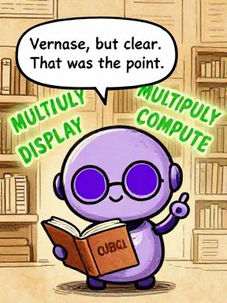
Verbose, but clear. That was the point.The Department of Defense mandated COBOL compilers for government contracts. By the mid-1960s, COBOL was the most widely used language in the world. Banks, insurance companies, and governments ran on it. By some estimates, over 200 billion lines of COBOL are still in production today, processing 95% of ATM transactions.
COBOL proved that programming languages don't have to look like math or binary — they can look like English. By making code readable to non-specialists, COBOL opened computing to an entirely new audience. The idea that code should be readable by humans, not just machines, influences every modern language.
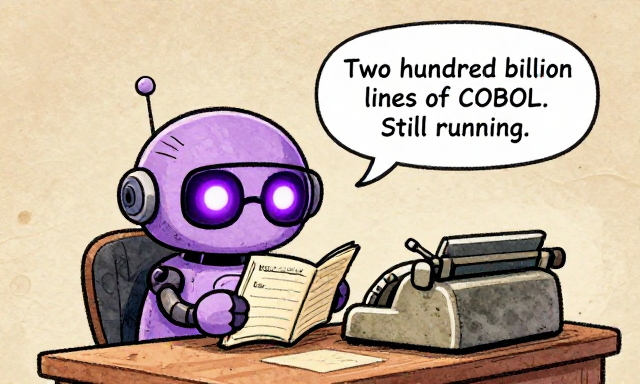
Two hundred billion lines of COBOL. Still running.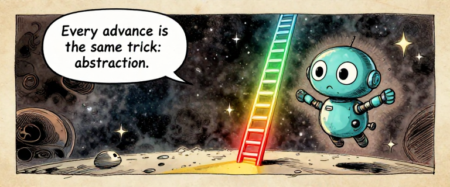
Every advance is the same trick: abstraction.There is a single idea connecting everything in this issue — and in the entire history of computing. That idea is abstraction. Abstraction means hiding complexity behind a simpler interface. You don't need to understand an engine to drive a car. Each layer of technology abstracts away the details beneath.
The abstraction ladder: every layer hides the complexity below
The essential insight: no rung replaces the ones below it. Your browser still runs on machine code. FORTRAN still compiles to assembly. The abstraction ladder is not a replacement chain — it's a stack. And the stack only works because every layer faithfully translates to the one beneath it.
Around the same time, an international committee designed ALGOL (ALGOrithmic Language). It introduced Backus-Naur Form (BNF) for describing grammars and block structure for organizing code. ALGOL never dominated commercially, but its ideas shaped every language that followed — making it arguably the most influential language of the era.
See the abstraction ladder in action! Type real code and watch it transform through four layers — from source code down to binary — with mapping lines showing how each element corresponds across levels.
Open Compiler Explorer →Abstraction is the superpower of computing. Each layer hides complexity and lets humans think at a higher level. But no layer works alone — they all rest on the layers beneath. The entire history of programming is the story of building this ladder, one rung at a time.
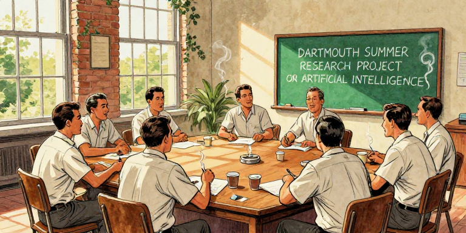
In the summer of 1956, a young mathematics professor named John McCarthy organized a now-legendary workshop at Dartmouth College. He invited some of the brightest minds — including Marvin Minsky and Claude Shannon — to spend the summer thinking about one question: Can machines be made to think?
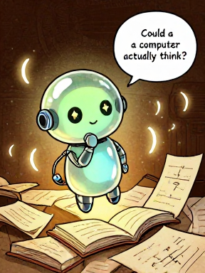
Could a computer actually think?John McCarthy character card
In 1958, McCarthy unveiled LISP (LISt Processing). It was unlike anything before. Where FORTRAN dealt with numbers and COBOL with business records, LISP dealt with symbols and lists. It could manipulate code as data. It introduced recursive functions, garbage collection, and dynamic typing — concepts that didn't become mainstream until the 2000s.
LISP: all parentheses, code as data
LISP was directly inspired by Church's lambda calculus
LISP was the first language designed not for calculation or business, but for reasoning. It treated code as data and drew directly from Church's lambda calculus. LISP proved that programming languages could be built not just for what computers do well, but for what we want computers to learn to do.
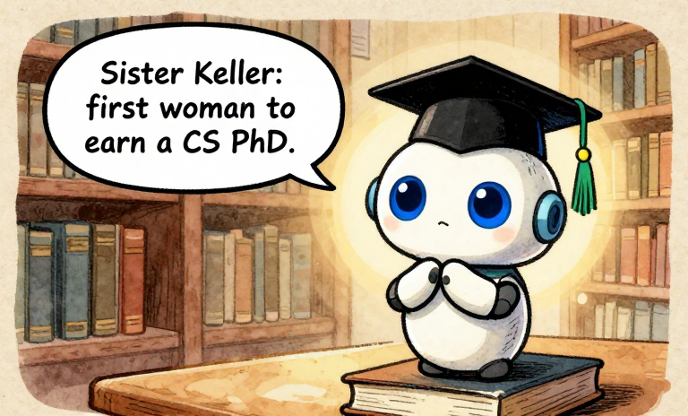
Sister Keller: first woman to earn a CS PhD.Mary Kenneth Keller was born in 1913 in Cleveland, Ohio. She entered the Sisters of Charity of the Blessed Virgin Mary in 1932, took her religious vows in 1940, and earned degrees in mathematics and physics. Then she turned to a field that barely existed yet: computer science.
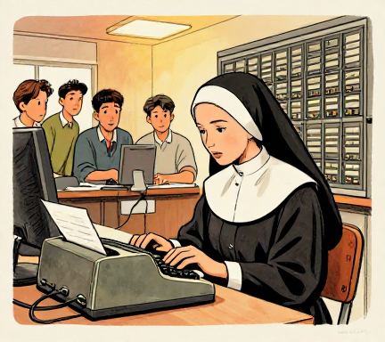
In the late 1950s and early 1960s, Keller worked at Dartmouth College's computer center — which did not normally admit women, but the CS department made an exception, recognizing her talent. There, she was involved in the early development of BASIC (Beginner's All-purpose Symbolic Instruction Code), created by John Kemeny and Thomas Kurtz in 1964.
BASIC: the language that brought computing to the people
BASIC was designed with a specific mission: give students who were not science or math majors a way to use computers. It was deliberately simple, with English-like commands and forgiving syntax. It would later power the personal computer revolution of the 1970s and 1980s, putting programming within reach of millions of hobbyists, students, and kids.
Mary Kenneth Keller character card
In 1965, Keller completed her PhD at the University of Wisconsin-Madison — her dissertation was titled "Inductive Inference on Computer Generated Patterns." She was, alongside Irving Tang, among the very first to receive a doctorate in computer science — and the first woman to do so.
After her doctorate, Keller founded the computer science department at Clarke College in Dubuque, Iowa, and chaired it for twenty years. She was passionate about making computing accessible — especially to women and people outside the traditional technical elite.
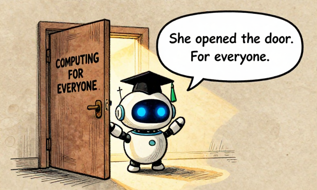
She opened the door. For everyone.Computing has always been shaped by people who believed it should be for everyone. Grace Hopper wanted programmers who weren't mathematicians. COBOL was designed for managers. BASIC was designed for students. Mary Kenneth Keller dedicated her career to this principle: the power of computers means nothing if it's locked away from the people who need it.
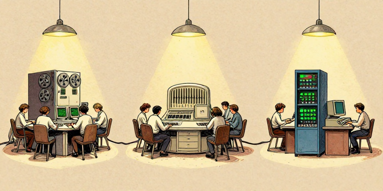
By the late 1960s, the world of programming languages had been transformed. Scientists wrote in FORTRAN. Businesses ran on COBOL. AI researchers dreamed in LISP. Students learned in BASIC. And behind the scenes, ALGOL's ideas about formal grammar and block structure were quietly shaping every new language.
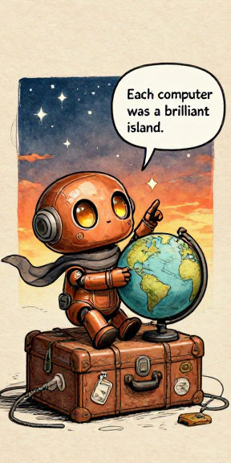
Each computer was a brilliant island.But step back and notice what's still missing. Every program runs on one machine. A FORTRAN program on an IBM computer won't run on a Burroughs or Honeywell without being rewritten. Programs are trapped — tied to specific hardware, specific operating systems, specific architectures.
And the machines themselves are isolated. No networks. No shared files. No way for a program on one computer to send data to another.
In fifteen years, humans went from writing raw binary to writing English-like sentences. Grace Hopper, John Backus, John McCarthy, Mary Kenneth Keller, Betty Holberton, Jean Sammet — they climbed the abstraction ladder, rung by rung. But every program they wrote ran on ONE machine. Code couldn't travel. Data couldn't travel.
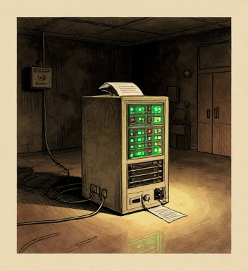
Two revolutions are coming that will shatter this isolation.
The first is an operating system — Unix — built on the radical philosophy that small, simple tools should be chained together. It will make software portable for the first time.
The second is a programming language — C — designed with deep ALGOL influence. It will make it possible to write one program and run it on almost any machine.
The journey so far and what comes next in Issue 4
The 1950s and 1960s gave us the fundamental insight that still drives all of software: human thought and machine execution are different, and the gap between them can be bridged by layers of translation. Compilers, high-level languages, and abstraction turned an impossible task — writing in binary — into something anyone can learn. But each language was a conversation with one machine. The next chapter is about making that conversation universal.
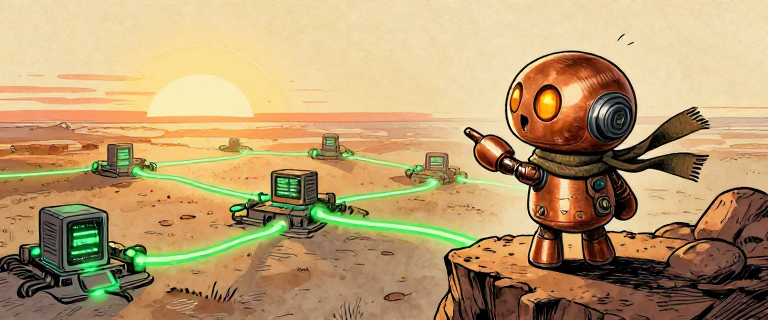
Next: connecting them all together.